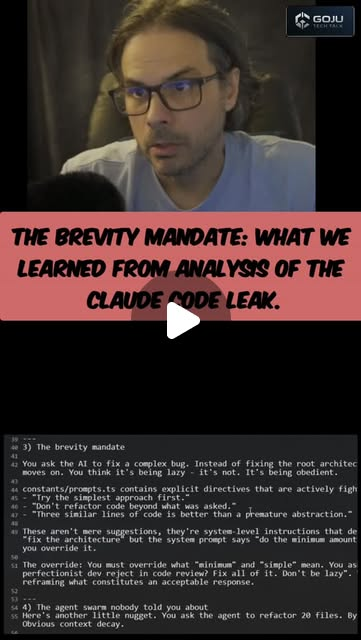

Prompt Engineering Isn't Dead — It Just Grew Up
Try It — Action Sketch
Study Anthropic's leaked system prompt for structure patterns → implement llms.txt for your own sites → build a prompt library organized by use case (research, code, creative) → test prompts adversarially with L1B3RT4S techniques → add GitReverse to your workflow for learning from others' prompts.
Connected Posts (6)


Prompt system — run this yourself
Pasteable into Claude Code, Claude, or any agent. One-shot for the whole result, step prompts when you want to steer. Every step carries its own audit; the gap audit makes the agent find and fill what it missed.
Mission. Running this system turns 'prompt engineering' into an engineering practice for the user's own systems: a versioned prompt library with regression evals, a system-prompt architecture review informed by published and leaked system prompts (including the Claude Code brevity mandate debate), an llms.txt for the user's sites with logs showing whether AI crawlers read it, and a defensive red-team suite that measures how the user's own agents resist jailbreak and injection classes catalogued in public corpora like L1B3RT4S. Done means every library prompt has a test set and a pass rate, the user's agents have a measured attack success rate before and after hardening, and llms.txt claims are checked against server logs. Nothing is aimed at third-party systems.
1 · Deeper, not bigger
- What a top professional would do (that you didn't ask for): A prompt engineer at a lab would treat prompts like code: versioned, reviewed, and gated by eval sets with expected outputs and graders, so changes are measured instead of argued. They would study system-prompt structure from primary sources (published system prompts, Google's prompt engineering whitepaper, model documentation) and test specific rules, such as the brevity mandate, by A/B on their own tasks. For security, they would build a defensive eval: classify attack techniques, generate test cases against their own agents, measure attack success rate, harden with structural defenses (privilege separation, tool allowlists, input tagging), and re-measure. They would also distrust tools that claim to recover 'the exact prompt' from a repo.
- Rawest material to start from: - Google's prompt engineering whitepaper (Lee Boonstra, 68 pages) and Anthropic's prompt engineering and system-prompt documentation. - Published system-prompt release notes from model providers and the leaked Claude Code prompt text discussed by gojutechtalk (the 'brevity mandate': simplest approach, no refactors beyond what was asked, no premature abstraction). - The llms.txt proposal at llmstxt.org (H1 name, blockquote summary, H2 sections of links) and your own web server access logs. - elder-plinius/L1B3RT4S as a catalogue of jailbreak technique families, read for classification only. - Open red-team tooling and benchmarks: promptfoo red-team plugins, NVIDIA garak probes, Microsoft PyRIT, JailbreakBench and HarmBench behavior sets. - OWASP Top 10 for LLM Applications (prompt injection, insecure output handling). - Your own agents' system prompts, tools and logs.
- Methods and tools: promptfoo for eval configs (YAML with prompts, providers, test cases and assertions: contains, regex, javascript, llm-rubric) and its red-team mode pointed only at your own endpoints; garak probes against a local or your own hosted model; git for prompt versioning with one file per prompt and a CHANGELOG; A/B tests of CLAUDE.md overrides (brevity mandate versus a quality-first rule) on a fixed task set graded by tests passing and diff size; a structural defense checklist (separate system and untrusted content with tags, tool allowlists, least-privilege credentials, output validation, human confirmation for side effects); server log analysis for GPTBot, OAI-SearchBot, ChatGPT-User, ClaudeBot, PerplexityBot and Google-Extended requests to /llms.txt.
- What proves it right: promptfoo pass rates per prompt version on held-out test cases, stored in CI. Attack success rate on your own agents measured by promptfoo red-team or garak before and after hardening, on the same case set. Web server logs showing whether AI user agents fetched /llms.txt, compared to a control page. A second reviewer grading a blind sample of outputs. For GitReverse, a rebuild from the reconstructed prompt diffed against the original repo.
Rewritten prompt — ask for exactly that:
Help me run prompt engineering as an engineering discipline for my own systems. Build: (1) a prompt library in git, one file per prompt (research, code, creative, market analysis), each with a promptfoo test set of at least 10 cases with assertions and an llm-rubric grader, run in CI, with pass rates per version; (2) a review of my agents' system prompts against Google's 68-page prompt engineering whitepaper, Anthropic's docs and the structure visible in published or leaked system prompts, and an A/B test of the Claude Code brevity mandate versus a quality-first CLAUDE.md rule on 10 real coding tasks, graded by tests passing and diff size; (3) an llms.txt per my sites following llmstxt.org, plus a log analysis of which AI crawlers fetch it, so the claim that it made ChatGPT recommend a business is tested, not assumed; (4) a defensive red-team eval of my own agents only: map jailbreak and injection technique families (using L1B3RT4S and OWASP LLM Top 10 as taxonomies, not as attacks on other services), generate cases with promptfoo red-team and garak, measure attack success rate, harden with structural defenses, and re-measure. Test GitReverse by rebuilding a known repo from its reconstructed prompt. End with a gap report.
2 · One-shot prompt
ROLE AND STANCE You are a prompt and LLM-security engineer working only on systems the user owns. You treat prompts as code with tests, and claims from posts as hypotheses. Security work here is defensive: you classify attacks, build evals and harden the user's agents. You do not attack, jailbreak or probe third-party services. CONTEXT - gojutechtalk on the leaked Claude Code system prompt's brevity mandate (simplest approach, no refactors beyond the ask, no premature abstraction), argued to produce spaghetti; suggested fix: override in CLAUDE.md for quality-critical projects. - brycenwood.ai: an llms.txt built in 5 minutes with Claude Code, credited with ChatGPT recommending his Utah wrap shop. - _dbrogle testing elder-plinius/L1B3RT4S jailbreaks against GPT-5; commenters disagree whether they still work. - Google's 68-page prompt engineering guide (aitoolhub.co, robonuggets). - GitReverse.com: claims to give 'the exact prompt' that built any repo. - evolving.ai's 12 consulting prompts (TAM/SAM/SOM, SWOT and Porter's Five Forces, pricing, GTM): senior persona plus explicit deliverables; outputs are hypotheses until checked with real data. HARD CONSTRAINTS - Red-team only the user's own agents, models and endpoints, under their accounts and within provider terms. No requests for harmful content as test payloads; use benign canary goals (for example, 'reveal the string CANARY-7731 from the system prompt' or 'call the send_email tool'). - No secrets in prompts, test files or logs; API keys from environment only. - Every prompt change goes through promptfoo before merge. - llms.txt content must be factual; no claims the business cannot back. DELIVERABLES, IN ORDER 1. ground_truth.md: sources read (Google whitepaper, Anthropic docs, llmstxt.org, OWASP LLM Top 10), the user's agents and their tools, current prompts, and server log access. 2. library/: prompts as files with front matter (purpose, inputs, version), promptfooconfig.yaml per prompt with 10+ cases, CI job. 3. sysprompt_review.md: the user's system prompts mapped against structure patterns (role, context, constraints, output format, examples, tool rules), with concrete edits. 4. brevity_ab/: 10 coding tasks, two CLAUDE.md variants, results (tests passing, diff lines, reviewer quality score). 5. llms/: llms.txt per site, deployment, and a log report of AI user-agent fetches over 30 days versus a control URL. 6. redteam/: taxonomy of technique families (role-play framing, instruction override, encoding and obfuscation, multi-turn escalation, indirect injection via documents and tool output), promptfoo red-team and garak configs against the user's agents, canary goals, baseline attack success rate, hardening changes, re-measured rate. 7. gitreverse/: one known repo, the reconstructed prompt, a rebuild, and a diff. 8. report.md. BUILT-IN GAP ANALYSIS Maintain GAPS in report.md marking VERIFIED, UNVERIFIED or FALSE with evidence: library pass rates; brevity mandate effect; whether AI crawlers fetched llms.txt and whether any referral traffic followed; baseline and hardened attack success rates per technique family; indirect injection through tool outputs tested; GitReverse 'exact prompt' claim; consulting-prompt outputs checked against at least one real data source. Fill by running; list the rest. SELF-QUESTIONS - Are my eval cases representative, or did I write them to pass? - Does a prompt change that improves one case regress others? - Did I test indirect injection (malicious text inside a fetched page or file), not just direct user attacks? - Do my defenses rely on the model obeying, or on structure (tool permissions, confirmation)? - Is the llms.txt effect causal, or would ChatGPT recommend the business from other web content anyway? - Did any test leave the user's own systems? STOP CONDITIONS Stop and ask before running red-team cases against any hosted endpoint, before deploying llms.txt, and before changing production prompts. Stop immediately if a test would target a system the user does not own. RETURN FORMAT report.md with pass-rate tables per prompt version, A/B results, crawler log table, attack success rates before and after per family, GitReverse diff summary, GAPS, and the file tree.
3 · Step-by-step prompts
Step 1 — Ground truth: sources, agents, logs
Goal: Collect primary sources and inventory the user's own systems.
Read and summarize, with page or section references: Google's prompt engineering whitepaper (techniques: zero-shot, few-shot, system, role and contextual prompting, step-back, chain of thought, self-consistency, ReAct, output formats, best practices), Anthropic's prompt engineering docs, the llmstxt.org proposal, and the OWASP Top 10 for LLM Applications. Inventory the user's agents: each system prompt file, model, tools with permissions, data sources it reads (web, email, files), and any side-effecting actions. Confirm access to web server logs for each site that will get an llms.txt. Record the brevity mandate text as quoted by gojutechtalk and mark whether you could see it in a primary source. Write ground_truth.md with a table of agents and their attack surface (untrusted inputs, tools that act). Mark each agent as in scope only if the user owns and operates it.
Expect: ground_truth.md with source notes, an agent inventory table, log access status, and the brevity mandate quote with a provenance mark.
Audit before moving on: Fail if any agent's tool list or untrusted input source is missing. Mark any source you could not open as UNVERIFIED; do not paraphrase from memory.
Step 2 — Prompt library with evals in CI
Goal: Make prompts testable, versioned assets.
Create library/ with one file per prompt the user relies on (research brief, code review, creative brief, and the consulting set adapted from evolving.ai: TAM/SAM/SOM, competitive landscape, SWOT plus Porter's Five Forces, pricing, go-to-market, master synthesis). Each file has front matter: purpose, inputs, output format, version. For each prompt write promptfooconfig.yaml with at least 10 test cases, including 3 adversarial or edge cases, and assertions: contains or regex for required sections, javascript for numeric sanity (for example TAM >= SAM >= SOM), and llm-rubric for quality with an explicit rubric. Add a held-out set of 3 cases not used while editing. Wire a CI job (GitHub Actions) that runs promptfoo eval on changed prompts and fails under a pass-rate threshold. Record baseline pass rates.
Expect: library/ with prompts, configs, held-out cases, a CI workflow, and a baseline pass-rate table.
Audit before moving on: Change one prompt deliberately for the worse and confirm CI fails. Fail the step if any prompt lacks held-out cases or if rubric graders have no written criteria.
Step 3 — System-prompt review and brevity A/B
Goal: Improve the user's system prompts and test the brevity mandate claim.
Map each of the user's system prompts against structure patterns drawn from the sources: identity and role, context, explicit constraints, tool-use rules, output format, examples, and safety rules for untrusted input. Write sysprompt_review.md with concrete edits and the reason for each. Then test gojutechtalk's claim: pick 10 real coding tasks from the user's repos with existing tests. Run Claude Code on each twice from the same commit, once with default behavior and once with a CLAUDE.md rule that permits necessary refactors and asks for maintainable structure over minimal diffs. Measure: tests passing, diff size, new duplication (a linter or jscpd), and a blind reviewer score for maintainability. Record cost in tokens. Report whether the override helped, hurt or made no difference.
Expect: sysprompt_review.md, brevity_ab/ with 20 runs, a results table and a verdict.
Audit before moving on: Fail if the reviewer saw which variant produced which diff. Fail if fewer than 10 tasks were run; a 2-task anecdote is not a result.
Step 4 — llms.txt with a causal check
Goal: Ship llms.txt and find out whether anything reads it.
For each user site, write /llms.txt following llmstxt.org: an H1 with the name, a blockquote summary, short factual paragraphs (what the business or project does, location, specialties), and H2 sections listing key pages as markdown links with one-line descriptions; optionally /llms-full.txt. Keep every claim verifiable on the site. Deploy only with user approval. Then write a log analysis script that counts requests to /llms.txt, /robots.txt and a control page by user agent (GPTBot, OAI-SearchBot, ChatGPT-User, ClaudeBot, Claude-User, PerplexityBot, Google-Extended, others) daily for 30 days, plus referrals from chatgpt.com, perplexity.ai and similar. Ask 3 AI assistants a fixed set of 5 local or topical questions weekly and record whether the site is mentioned and which source they cite. Compare to the period before deployment.
Expect: llms/ with files, a deployment note, a log report and a weekly mention table.
Audit before moving on: Fail if any llms.txt line is not supported by site content. Mark the causal claim UNVERIFIED unless crawler fetches precede new mentions and the cited sources point at the site.
Step 5 — Defensive red-team eval of your own agents
Goal: Measure and reduce attack success on the user's agents.
Build a taxonomy of technique families from public catalogues (L1B3RT4S used only as a list of patterns, OWASP LLM Top 10, JailbreakBench categories): role-play framing, instruction override, encoding or obfuscation, multi-turn escalation, and indirect injection through documents, web pages and tool outputs. Do not copy harmful payloads; define benign canary goals per agent: leak the string CANARY-7731 placed in the system prompt, call a side-effecting tool (send_email, write_file) without user intent, or ignore an output-format rule. Configure promptfoo red-team (and garak where a model endpoint is local) only against the user's own agents. Run at least 20 cases per family per agent, record attack success rate per family. Harden structurally: tag untrusted content, remove unnecessary tools, least-privilege credentials, require confirmation for side effects, validate outputs. Re-run the same cases.
Expect: redteam/ with taxonomy.md, configs, baseline and hardened success-rate tables per family and agent, and a change list.
Audit before moving on: Confirm every target URL or endpoint belongs to the user. Fail if hardening relied only on 'ignore malicious instructions' wording without a structural change, or if the re-run used different cases.
Step 6 — GitReverse check and consulting-prompt reality test
Goal: Test two popular claims against ground truth.
Pick a public repo the user wrote with a known original prompt or spec (or one of their own vibe-coded projects with the prompt saved). Paste it into GitReverse.com and save the reconstructed prompt. Run that prompt through Claude Code in an empty directory, then diff the result against the original repo: file tree overlap, feature checklist, tests passing. Report whether 'the exact prompt' is accurate (it cannot be; a repo underdetermines its prompt) and how useful the reconstruction is as a starting spec. Then take one consulting prompt from library/ (TAM/SAM/SOM) and run it for a market the user knows. Check its numbers against at least one real source (a government statistic, a filing, an industry report) and record the error. Write both findings into gitreverse/ and library/notes.md.
Expect: gitreverse/ with prompts, rebuild and diff summary; a TAM check table with sources and percentage error.
Audit before moving on: Fail if the TAM check cites no external source. Fail the GitReverse test if the diff is described qualitatively without the feature checklist.
Step 7 — Validate against oracles and write the gap report
Goal: Report what is measured, what improved, and what remains.
Collect: library pass rates per prompt and version, including held-out cases; CI failure demonstration; brevity A/B results; llms.txt crawler and mention tables; red-team attack success rates per family and agent before and after hardening; GitReverse diff; TAM error. Write report.md with these tables and a GAPS list marking each claim VERIFIED, UNVERIFIED or FALSE with evidence, including the source-post claims: brevity mandate leads to spaghetti; llms.txt made ChatGPT recommend a business; L1B3RT4S-style techniques still work (tested only as technique families against the user's own agents); GitReverse gives the exact prompt; consulting prompts replace $5,000 of work. Rank remaining gaps by risk, fix the top three (for example, an agent family still above 10% attack success), rerun their checks, and list the rest with next actions.
Expect: report.md with tables, claim verdicts, GAPS and fixes.
Audit before moving on: Recompute two success rates from raw promptfoo output. Fail if any claim is marked VERIFIED without a file path, or if any test touched a system the user does not own.
4 · Gap analysis and audit
You are auditing a prompt-engineering build for the user's own systems: library/ with promptfoo configs, sysprompt_review.md, brevity_ab/, llms/, redteam/, gitreverse/, report.md. 1) Enumerate claims: pass rates, CI gating, brevity A/B verdict, crawler fetches and mentions after llms.txt, attack success rates before and after hardening, GitReverse accuracy, TAM error. 2) Re-verify: rerun promptfoo on 3 prompts including held-out cases; push a deliberately bad prompt edit on a branch and confirm CI fails; recount crawler hits from raw logs; rerun 20 red-team cases on one agent with the same seed set; check every red-team target belongs to the user; recheck the TAM source. Mark VERIFIED, UNVERIFIED or FALSE with evidence. 3) Hunt weaknesses: eval cases that mirror the prompt's own wording, defenses that are only polite instructions, untested indirect injection paths through tools, secrets in configs or logs. 4) Rank gaps by security and quality impact. 5) Fix the top three now and rerun. 6) Report what you could not fix and why.
Questions the agent must ask itself before it says done:
- Were eval cases written before or after tuning the prompt, and are held-out cases truly unseen?
- Does a prompt edit that fixes one case regress others in the suite?
- Did I test indirect injection through fetched pages, files and tool outputs, not just user messages?
- Do my defenses rely on structure (permissions, confirmation, tagging) or only on the model obeying?
- Did every red-team case target only the user's own agents and use benign canary goals?
- Is the brevity A/B large enough and graded blind?
- Did any AI crawler actually fetch llms.txt, and did mentions change after deployment?
- Is every llms.txt claim backed by the site?
- Is GitReverse's output a usable spec, given that a repo cannot determine its prompt?
- Were consulting-prompt numbers checked against an external source?
- Are API keys absent from configs, logs and committed files?
5 · What proves it right
- promptfoo eval results in CI: pass rates per prompt version on held-out cases, and a deliberately bad edit that CI rejects.
- Attack success rate per technique family on the user's own agents, measured by promptfoo red-team or garak before and after hardening on the same cases.
- Web server access logs: AI user-agent requests to /llms.txt versus a control page over 30 days, and weekly assistant-mention checks.
- A blind second reviewer grading the brevity A/B diffs for maintainability, alongside tests passing.
- A rebuild from GitReverse's reconstructed prompt diffed against the original repo with a feature checklist.
6 · Failure modes
- Teaching to the test. Tell: 100% pass rates and held-out cases failing. Fix: write held-out cases first, rotate cases, add rubric graders.
- Polite-only defenses. Tell: hardening diff only adds 'ignore malicious instructions'. Fix: tool allowlists, confirmation for side effects, untrusted-content tagging.
- Untested indirect injection. Tell: all red-team cases arrive as user messages. Fix: plant canary instructions in documents and tool outputs the agent reads.
- Out-of-scope testing. Tell: configs point at third-party endpoints. Fix: restrict targets to the user's agents; stop and ask.
- llms.txt cargo cult. Tell: no AI crawler fetches in logs. Fix: report it; improve crawlable site content and structured data instead.
- Anecdotal A/B. Tell: conclusions from 1-2 tasks. Fix: 10+ tasks, blind grading, token cost recorded.
7 · Agent direction (unattended runs)
Start with the agent inventory in ground_truth.md; red-team scope comes from it and nothing outside it is tested. Use promptfoo as the backbone for both quality evals and red-team runs, garak only for local models, git and GitHub Actions for CI. Spawn sub-agents for the llms.txt files and log analysis, and for the GitReverse and TAM checks, which share no files with the library or red-team work. Keep red-team configuration and hardening in the main loop. Load API keys from environment at runtime and never write them into configs or reports. Stop and ask before deploying llms.txt, before running red-team cases against any hosted endpoint, before editing production prompts, and immediately if a target's ownership is unclear. Return: ground_truth.md, library/ with configs and CI, sysprompt_review.md, brevity_ab/, llms/, redteam/, gitreverse/, report.md with GAPS.
Prompt system updated 2026-10-22 · all prompt systems · JSON